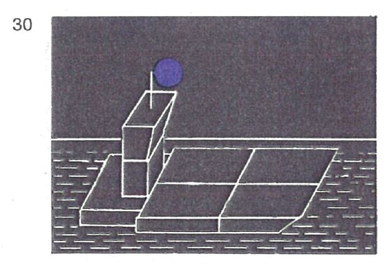
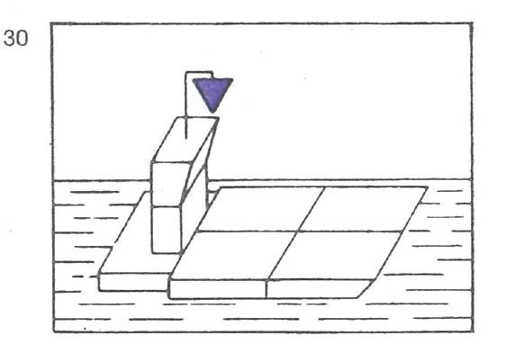
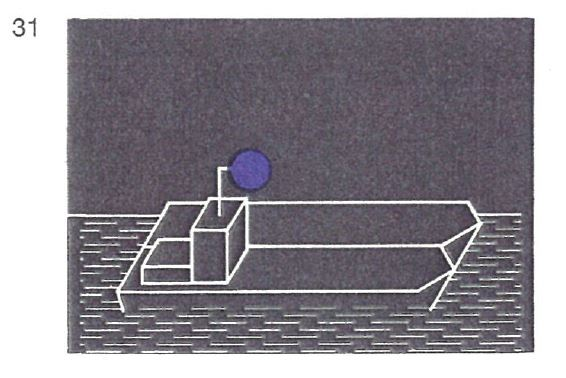
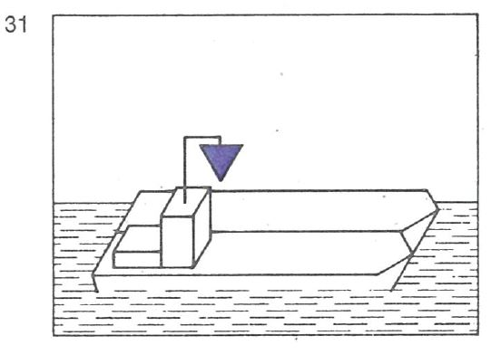
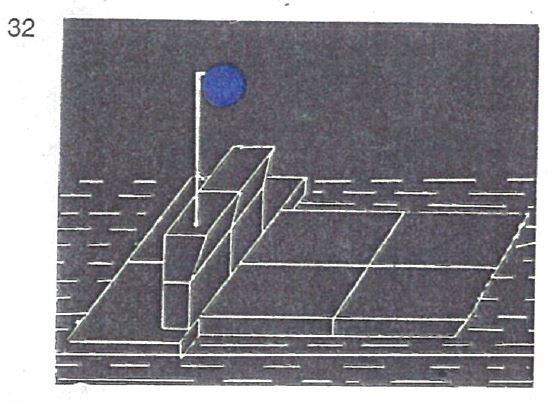
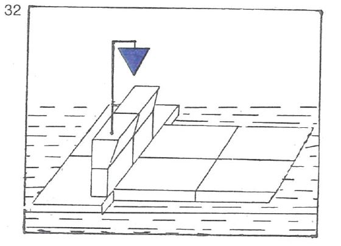

| 1. | Fahrzeuge in Fahrt, die bestimmte entzündbare Stoffe nach ADNR befördern, müssen außer der anderen nach dieser Verordnung vorgeschriebenen Bezeichnung folgende Bezeichnung nach ADNR Nr. 7.1.5.0 oder 7.2.5.0 führen: |
| | - | bei Nacht: | |
| | | ein blaues Licht; |
| | - | bei Tag: | |
| | | einen blauen Kegel mit der Spitze nach unten. |
| | Dieses Zeichen muss an einer geeigneten Stelle und so hoch geführt werden, dass sie von allen Seiten sichtbar ist; anstelle des blauen Kegels kann auch je ein blauer Kegel auf dem Vor- und Hinterschiff in einer Höhe von mindestens 3 m über der Ebene der Einsenkungsmarken geführt werden. |
| 2. | Fahrzeuge in Fahrt, die bestimmte gesundheitsschädliche Stoffe nach ADNR befördern, müssen außer der anderen nach dieser Verordnung vorgeschriebenen Bezeichnung folgende Bezeichnung nach ADNR Nr. 7.1.5.0 oder 7.2.5.0 führen: |
| | - | bei Nacht: | |
| | | zwei blaue Lichter; |
| | - | bei Tag: | |
| | | zwei blaue Kegel mit der Spitze nach unten. |
| | Diese Zeichen müssen übereinander in einem Abstand von etwa 1 m an einer geeigneten Stelle und so hoch geführt werden, dass sie von allen Seiten sichtbar sind; anstelle der zwei blauen Kegel können auch je 2 blaue Kegel auf dem Vor- und Hinterschiff, von denen der untere in einer Höhe von mindestens 3 m über der Ebene der Einsenkungsmarken angebracht ist, geführt werden. |
| 3. | Fahrzeuge in Fahrt, die bestimmte explosive Stoffe nach ADNR befördern, müssen außer der anderen nach dieser Verordnung vorgeschriebenen Bezeichnung folgende Bezeichnung nach ADNR Nr. 7.1.5.0 oder 7.2.5.0 führen: |
| | - | bei Nacht: | |
| | | drei blaue Lichter; |
| | - | bei Tag: | |
| | | drei blaue Kegel mit der Spitze nach unten. |
| | Diese Zeichen müssen übereinander in einem Abstand von jeweils etwa 1 m an einer geeigneten Stelle und so hoch geführt werden, dass sie von allen Seiten sichtbar sind. |
| 4. | Fährt oder fahren in einem Schubverband oder in einer Zusammenstellung gekuppelter Fahrzeuge ein Fahrzeug oder mehrere Fahrzeuge nach Nummer 1, 2 oder 3, muß die Bezeichnung nach Nummer 1, 2 oder 3 auf dem Fahrzeug geführt werden, das den Verband oder die Zusammenstellung fortbewegt. |
| | |  |  |
| | |  |  |
| 5. | Schubverbände, die durch zwei schiebende Fahrzeuge nebeneinander fortbewegt werden, müssen die Bezeichnung nach Nummer 4 auf dem steuerbordseitigen, schiebenden Fahrzeug führen. |
| | |  |  |
| 6. | Fahrzeuge, Schubverbände und gekuppelte Fahrzeuge, die verschiedene gefährliche Güter nach Nummer 1, 2 oder 3 zusammen befördern, führen die Bezeichnung für das gefährliche Gut, das die größte Anzahl der blauen Lichter oder blauen Kegel erfordert. |
| 7. | Fahrzeuge, die keine Bezeichnung nach Nummer 1, 2 oder 3 führen müssen, jedoch nach ADN Abschnitt 1.16.1 ein Zulassungszeugnis besitzen und die Sicherheitsbestimmungen einhalten, die für ein Fahrzeug nach Nummer 1 gelten, können bei der Annäherung an Schleusen die Bezeichnung nach Nummer 1 führen, wenn sie zusammen mit einem Fahrzeug geschleust werden wollen, das die Bezeichnung nach Nummer 1 führen muss. |
| 8. | Die Lichtstärke der in diesem Paragraphen vorgeschriebenen blauen Lichter muß mindestens derjenigen der gewöhnlichen blauen Lichter entsprechen. |